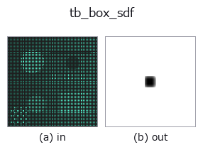

typed op• 資料種類:points → volume
• 呼叫:fullseye.apply(img, "tb_box_sdf", a=0.5, b=0.5)(2-D 的模型是一張圖 + 兩個純量旋鈕 a,b∈[0,1])

*圖為在 128×128 合成輸入上實際執行的輸出。左為輸入，右為輸出。點雲以俯視散點顯示(亮度 = z)，一維序列為折線，體資料為沿 z 的最大值投影，影片為中間影格，複數影像為振幅；無法成像的回傳值直接顯示數值。*
*旋鈕 a 不改變輸出(實測: 0.1 / 0.5 / 0.9 相同)。*
*旋鈕 b 不改變輸出(實測: 0.1 / 0.5 / 0.9 相同)。*
階段(前置運算子 → 本運算子，由左至右):
▸ tb_box_sdf: stages (docs site)
換別的影像(合成場景 / 照片 / 硬幣。上排為輸入，下排為對應輸出。旋鈕取預設):
▸ tb_box_sdf: other inputs (docs site)
動態(GIF: 依序顯示影格 / 視點 / 切片。靜態圖是完整版，GIF 為輔助):
軸對齊長方體的精確有號距離場(內部為負,外部為正)。
> 以下的詳細說明為原文 —— 摘要與標題已翻譯。
Inigo Quilez の box SDF: `q = |p-center| - half_extents` とし、
`outside = |max(q,0)|` (角/辺/面の外はユークリッド距離),
`inside = min(max(q_x,q_y,q_z), 0)` (内側は最近面までの負値),
`sdf = outside + inside`。
`half_extents` は各軸の半辺長(中心から面まで)。外側は厳密距離(角では対角、面前は
垂直距離)、内側も最近面までの厳密負距離を与える。
Raises ValueError for any half_extent<0 or malformed grid/center/half_extents。
2-D 進化レジストリへ橋渡しした 3d の op `box_sdf。実装は同じで、呼び出し規約だけ op(v, a, b) に合わせてある。この op に調整点は無く、a も b` も使われない。
• 範例資料目錄(下載 URL / 授權) —— 2-D 用 skimage.data(BSD/公有領域)加合成圖,3-D 給出真實資料源(Stanford/PDS 等)的下載 URL。
• 運算子來歷與參考文獻 —— 該運算子族所依據的研究/方法出處。
下面的程式已確認可以執行(與圖相同的輸入)。在 Studio 說明中，此區塊會變成按鈕，可當場載入並執行。
img_to_points 0.50 0.50 tb_box_sdf 0.50 0.50
▸ Load this pipeline · Load & run
下面的範例呼叫的是底層帳本運算子 box_sdf。此橋接運算子只是把同一實作適配為 fn(v, a, b) 慣例，行為完全相同(只是呼叫形式不同)。
• gear_metrology — py -3.11 examples_3d/gear_metrology.py
• render_beauty — py -3.11 examples_3d/render_beauty.py
• sdf_csg — py -3.11 examples_3d/sdf_csg.py
volume 作為輸入)identity · vol_gaussian · vol_median · vol_erode · vol_dilate · vol_threshold · vol_reg_dilate · vol_reg_erode
typed)tb_points_to_voxel · tb_estimate_point_normals · tb_iss_keypoints · tb_angle_3points · tb_project_points · tb_render_point_depth · tb_statistical_outlier_removal · tb_radius_outlier_removal
*Provenance: ops.py — 2D 運算子登記表。本條目由 tools/opdocs.py md 自動產生(請勿手動編輯)。*
© 2026 Kazufumi Furuse — Fullseye operator documentation. Licensed under Apache-2.0.
{kind=link}
{kind=link}